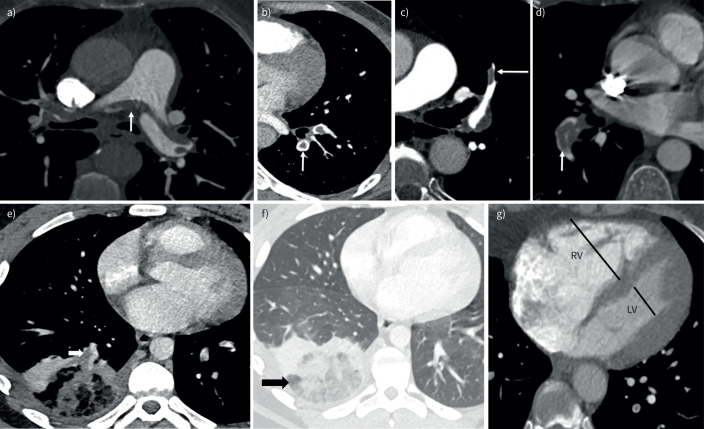

疾病 胸腔
Pulmonary embolism ｜ 肺栓塞 · Venous Thromboembolism 筆記更新 2026-07-28· 整理狀態：可用
加入閱讀清單 其他名稱 11 PE · Pulmonary embolism · 肺栓塞 · 肺動脈栓塞 · VTE · Venous thromboembolism · 靜脈血栓栓塞 · DVT · Deep vein thrombosis · 深部靜脈血栓 · Saddle embolism
一句話總覽
靜脈血栓（絕大多數來自下肢近端深部靜脈）脫落後卡進肺動脈——致死的不是缺氧，是右心室急性後負荷過載造成的阻塞型休克 。它很少是主角，卻是每一次胸痛與喘都必須先排除的那一個 ；流程的第一步永遠是「血行動力穩不穩」，不是「D-dimer 多少」。
30 秒行動卡
診斷關鍵 ：突發喘 ＋ 心搏過速 ＋ 肺部聽診乾淨 。穩定 → 臨床機率分層 → D-dimer 或直接 CTPA ；不穩 → 床邊 Echocardiography 看右心室，看到擴大就足以決策
治療骨架 ：抗凝 是所有人的底線；高風險（休克或持續低血壓）加溶栓 ；中風險只抗凝 ＋ 密切監測
絕對不可 ：高機率病人拿 D-dimer 陰性排除；把不穩定的病人推去做 CT；懷孕用 DOAC 或 warfarin
定義與定位
Venous thromboembolism (VTE) 是同一個病的兩端：血栓長在深部靜脈叫 deep vein thrombosis (DVT) ，脫落卡進肺動脈叫 pulmonary embolism (PE) 。壓迫式超音波只在 30–50% 的 PE 病人找得到 DVT （早年靜脈攝影年代才是 70%），所以下肢超音波陰性完全不能排除 PE ；反過來，相當比例的近端 DVT 病人做影像會發現無症狀 PE——兩者共用同一套抗凝選擇與療程規則 ，所以寫成一篇。
項目
重點
本質
肺動脈被血栓阻塞 → 右心室後負荷驟增 ；它是阻塞型休克 三大成因之一（另兩個：Cardiac tamponade 、張力性Pneumothorax↗ ，見 Shock ）
栓子來源
下肢近端深部靜脈（膕、股、髂）為主 ；孤立性小腿遠端血栓造成 PE 的比例低得多
非血栓性栓塞
脂肪（長骨骨折）、羊水、空氣、腫瘤、感染性栓子——機轉與處置完全不同
分類位置
「喘但肺部聽診乾淨」那一格的第一名（見 Dyspnea ）
病因與機制
flowchart TD
A["深部靜脈血栓脫落"] --> B["卡在肺動脈"]
B --> C["肺血管阻力上升<br/>右心室後負荷驟增"]
C --> D["右心室急性擴張<br/>壁張力上升"]
D --> E["心室中膈左偏<br/>心包限制左心室"]
E --> F["左心室前負荷下降"]
F --> G["心輸出量塌陷<br/>阻塞型休克"]
D --> H["右冠灌流壓下降<br/>右心室缺血"]
H --> D
B --> I["死腔通氣<br/>V/Q 不匹配"]
classDef key fill:#8e0000,stroke:#5f0000,color:#fff,font-weight:bold
class G key
筆記中的流程與關係 為什麼死的是右心室，不是肺
右心室平常只對抗約六分之一的體循環阻力，壁薄、沒有肥厚的儲備 ，後負荷突然上升就直接擴張。擴張之後兩條路同時往下走：① 中膈被推向左邊，而心包限制住總容積 → 左心室裝不進血 → 心輸出量塌陷 ；② 右心室壁張力上升、體循環血壓卻下降 → 右冠灌流壓下降 → 右心室缺血 → 更收不動 ——這就是 Troponin 會升高的原因，也解釋了為什麼一旦低血壓就急速惡化。
一句話：病灶在肺，死因在右心，塌掉的是左心。
為什麼低血氧，卻常常 PaCO₂ 偏低
主機轉是血流重新分配造成的 V/Q 不匹配 （栓塞區成為死腔通氣，其餘肺區被過度灌注而 V/Q 偏低），加上肺泡塌陷與部分右向左分流。所以A-a gradient 增大 、PaO₂ 下降；而病人因疼痛與反射性過度換氣，PaCO₂ 通常偏低 （呼吸性鹼中毒）。
兩個反向陷阱：PaO₂ 與 SpO₂ 正常完全不能排除 PE ；PaCO₂ 由低轉正常或上升，代表他快撐不住了 。肺功能的指紋則是肺量計正常、TLC 正常、DLCO 單獨下降 ——管路不通，氣道與肺泡本身是好的。
危險因子 — Virchow's triad 就是分類法
分類
具體項目
血流滯留 手術後、制動與臥床 、中風後偏癱、石膏固定、長途飛行或久坐 、心衰竭、肥胖、懷孕（子宮壓迫髂靜脈）
內皮損傷 大手術（尤其骨科：髖與膝關節置換、髖骨折 ）、外傷與骨折、中央靜脈導管 、過去 VTE 病史
高凝（後天） 惡性腫瘤 （尤其胰臟、胃、腦、肺、卵巢與血液惡性腫瘤）、抗磷脂症候群 、口服避孕藥與荷爾蒙補充 、懷孕與產後（產後風險最高） 、腎病症候群 （antithrombin 由尿流失）、骨髓增生性腫瘤 （尤其 JAK2 陽性）、發炎性腸道疾病、敗血症、heparin-induced thrombocytopenia、tamoxifen 等 SERM 、高齡、吸菸
高凝（遺傳） factor V Leiden（西方最常見） 、prothrombin G20210A、protein C／protein S／antithrombin 缺乏
[[Antiphospholipid syndrome]] 要單獨記
它是少數「動脈與靜脈都會栓 」的疾病，但靜脈端最常見，其中下肢 DVT 是所有單一表現的第一名 ；動脈端最常見的是腦中風，產科最常見的是反覆早期流產——三種問法三個答案 。
診斷要求間隔至少 12 週兩次抗體陽性 （排除感染造成的一過性陽性）；三種抗體中 lupus anticoagulant 的血栓風險最高，名字是反諷的：試管內延長 aPTT，人體內促凝血。三重陽性者必須用 warfarin，不可用 DOAC。 相對地，遺傳性血栓體質驗出來很少改變抗凝療程的決定 ，不必背完整清單——真正決定療程的是「這一次是誘發型還是未誘發型」。
臨床表現
典型 ：呼吸困難（最常見）與心搏過速 ，多為突發或數小時內加重；焦慮不安、呼吸急促提示性 ：肋膜性胸痛與咳血 → 代表周邊、較小、造成肺梗塞的栓子 （刺激到胸膜才會痛）；單側下肢腫脹壓痛；低度發燒少見但重要 ：暈厥、低血壓、心跳停止（多為 PEA）→ 代表中央大栓塞 ；新發Atrial fibrillation
理學檢查常常完全正常——這件事本身就是線索
PE 最常見的徵象是心搏過速與呼吸急促，其餘都可以是正常的 ；肺部聽診乾淨 是它的招牌，因為空氣進出沒問題，被擋住的是血流。所以「喘得明顯、SpO₂ 卻還好、肺聽起來乾乾淨淨」不是「應該沒事」，而是你剛拿到最有鑑別力的一條資訊 （完整那一格見 Dyspnea ）。
右心負荷的徵象只有大栓塞才出現：頸靜脈怒張、loud P2、右側 S3、三尖瓣逆流雜音 ——看到就代表已經走到危險端。
兩組反直覺的對應
咳血不是最常見的症狀 ，它反而代表「周邊、比較小」的栓子；真正大的中央栓塞表現是暈厥與低血壓 ，常常不痛也不咳血。
胸痛的性質會告訴你位置 ：肋膜性痛 → 周邊；胸骨後壓迫感 → 中央大栓塞造成的右心室缺血，此時最像 ACS 。
→ 相關主訴流程：Dyspnea 、Chest pain↗
診斷
第一個岔路：血行動力穩不穩 — 整套流程的順序顛倒就會出事
狀態
定義
走哪一條
不穩定 心跳停止；阻塞型休克（收縮壓 ＜90 mmHg 或需升壓藥才維持 ≥90 mmHg，且合併器官低灌流）；持續低血壓 （收縮壓 ＜90 mmHg 或下降 ≥40 mmHg 且持續 ＞15 分鐘，非新發心律不整、低血容或敗血症所致）
立刻床邊 Echocardiography ：右心室擴大與功能不良即足以決策，不必等 CTPA ；同步準備再灌流
穩定 以上皆非
走臨床機率分層 → D-dimer 或影像
不穩定的病人不推去做 CT
影像室沒有監測、沒有人手、沒有藥。床邊超音波看到右心室擴大 ＋ 合適的臨床情境，就足以啟動溶栓 ——這是全篇最重要的一句。支持性徵象：右心室／左心室舒張末徑比 ≥1.0 、中膈變平呈 D-shape 、McConnell sign （右心室游離壁動作低下但心尖收縮保留）、下腔靜脈擴張且不隨呼吸塌陷。反過來說，不穩定而右心室完全正常，就要改找別的休克原因 （見 Shock ）。
穩定病人：先分層，再決定要不要驗
工具
由什麼組成（記結構，不記配分）
怎麼用
Wells score DVT 的臨床徵象、心搏過速、近期制動或手術、VTE 病史、咳血、惡性腫瘤，以及**「PE 是不是最可能的診斷」**（權重最重、也最主觀的一項）
分低／中／高三層，或二分為 PE unlikely／likely
revised Geneva score 同一個骨架，但全部為客觀項目、不含醫師主觀判斷
分層結果與 Wells 相當；不想引入主觀性時用它
PERC rule （8 項全符合才算過）年齡 ＜50、心率 ＜100、SpO₂ ≥95%、無單側腿腫、無咳血、4 週內 無需要住院的手術或外傷、無 VTE 病史、未使用外源性雌激素
只用在臨床機率本來就很低的人 ：8 項全符合就連 D-dimer 都不必驗 。它不是診斷工具——任何一項不符合 ≠ 有 PE ，只代表要往下走 D-dimer
D-dimer — 只有一種正確用法
它是排除工具，不是診斷工具
陰性預測值高、特異度極差。 年齡、感染、術後、外傷、惡性腫瘤、懷孕、住院、心衰竭、主動脈剝離全都會讓它升高。臨床高機率者不驗，直接排 CTPA ——高機率下陰性不足以排除，只換來延誤。
＞50 歲改用年齡調整切點 ＝ 年齡 × 10 µg/L FEU （例如 70 歲用 700），可明顯減少不必要的影像；僅限「非高機率」病人，且僅適用以 FEU 報告的試劑（標準切點 500 µg/L） ，報 DDU 的實驗室要先換算。（2019 ESC 與 ADJUST-PE 原文寫「＞50 歲」；部分文獻寫「≥50 歲」。50 歲整時 age×10 ＝ 500 ＝ 標準切點，臨床無差異，但引指引原文時是「＞50 歲」）
另一套被驗證的策略是 YEARS ：三項臨床項目（DVT 徵象、咳血、PE 為最可能診斷）全無時切點放寬到 1000 µg/L ，有任一項則用 500 µg/L；懷孕另有 pregnancy-adapted YEARS。
影像
工具
定位
什麼時候用
CT pulmonary angiography (CTPA) 首選確診工具 ：直接看到肺動脈內的充盈缺損 ，同時量右心室／左心室比值做風險分層，還能一次看出替代診斷穩定病人的第一線（見 Chest CT↗ ）
V/Q scan （通氣灌流掃描）找灌流缺損而通氣正常 的不匹配區；對乳房的輻射劑量較低
腎功能不良、顯影劑過敏、懷孕 ；胸部 X 光乾淨者判讀率最好
下肢壓迫式超音波 找到近端 DVT 就等於拿到治療的理由
不能做 CTPA、或想避免輻射時的替代路徑

急性 PE 的 CTPA 組圖：a saddle embolus；b 中央 filling defect 被顯影血流包圍的 doughnut／polo-mint sign；c 與血管長軸平行的 railway-track sign；d 擴張肺動脈內血栓；e–f 肺梗塞的 reverse-halo pattern；g 以心內膜邊界最大短軸量得 RV/LV >1。Source: Multimodality imaging of acute and chronic pulmonary thromboembolic disease , Fig. 3。
心電圖與生物標記 — 都不是拿來確診的
發現
意義
竇性心搏過速 最常見的心電圖表現 ；心電圖也可以完全正常
S1Q3T3 經典但既不敏感也不特異 ，約 15% 的急性 PE 出現 （不限大栓塞）。看到有意義，沒看到毫無意義
V1–V4 T 波倒置 **右心室負荷（right heart strain）**的表現，在 PE 中比 S1Q3T3 常見且與預後相關；同類旁證還有新發右束支傳導阻滯、電軸右偏、V1 的 qR、心房顫動
Troponin 升高BNP／NT-proBNP 升高 （見 BNP↗ ）分別是右心室缺血與右心室壁張力上升的證據 → 兩者都是風險分層用，不是診斷用 ；PE 的 troponin 升幅通常較小、變化較平（對照見 EKG ischemia 與 ACS ）
盛行率排序：竇性心搏過速約 31%（最常見）> 順鐘向轉位 28% > V1–V3 T 波倒置 18% > S1Q3T3 15% > 新發 RBBB 14% ——T 波倒置比 S1Q3T3 常見，但差距不大。
胸部 X 光的角色是「排別人」
Chest X-ray↗ 正常完全不能排除 PEWestermark sign （局部血管紋理稀少）、Hampton hump （貼胸膜的楔形陰影，代表肺梗塞）、Fleischner sign （肺動脈擴大）。它真正的用途是抓出氣胸、肺炎、肺水腫這些替代解釋。
肺梗塞可造成少量滲出液 性胸水，細胞可為嗜中性球或嗜伊紅球為主——見 Pleural fluid analysis 。
鑑別診斷
PE 幾乎不會是主角，但它永遠是「必須先排除的那一個」——這一節就是為此存在。
要排除的
支持它、不支持 PE 的線索
怎麼分開
ACS 壓迫感、放射到手臂或下頜、冒冷汗；troponin 明顯動態上升 ；連續導程的 ST 段變化 ；典型冠心症危險因子（見 CAD ）
EKG（見 EKG ischemia ）＋ Troponin 動態。PE 的 troponin 升幅小，心電圖是右心 的變化（V1–V4 T 倒置）而非局部缺血分布。兩者可以並存 ，大量 PE 也會造成第 2 型心肌梗塞
Aortic dissection 瞬間即達最痛 的撕裂痛、痛會遷移、兩臂收縮壓差 ＞20 mmHg 、新出現的舒張期雜音、縱膈變寬D-dimer 兩者都升高，分不開 ；靠 CTA／CTPA 一次分開。未排除剝離前不可抗凝或溶栓
Cardiac tamponade 頸靜脈怒張 ＋ 低血壓 ＋ 心音遙遠、pulsus paradoxus
兩者都是阻塞型休克、都會頸靜脈怒張 ——床邊超音波一眼分開：填塞是心包積液 ＋ 右心房室塌陷 ，PE 是右心室擴大而心包乾淨
Pneumothorax↗ 單側呼吸音消失 ＋ 叩診過度反響 、氣管偏向對側理學檢查就分得開 （PE 是聽診乾淨、兩側對稱）；張力性是臨床診斷，先減壓不等影像
Pneumonia 發燒、膿痰、局部濕囉音與叩診濁音、egophony ；病程數天Chest X-ray↗ 有 consolidation。PE 的低度發燒不會伴隨膿痰與實質化
Heart failure 急性失代償orthopnea 與 PND 、兩側基部囉音、S3、下肢對稱 水腫、體重增加BNP↗ 、Chest X-ray↗ 、Echocardiography 看左心 ；PE 的腿腫是單側不對稱 ，肺是乾淨的
心因性／過度換氣
手腳與口周發麻、嘆息式呼吸、年輕、無危險因子
排除性診斷 ——PERC 全符合才輪得到它
三個阻塞型休克靠床邊超音波一次分完
右心室擴大而心包乾淨 → PE；心包積液加右心塌陷 → 填塞；lung sliding 消失加氣管偏移 → 張力性氣胸。 這三句就是「頸靜脈怒張 ＋ 低血壓 ＋ 肺乾淨」這個組合的全部答案（血行動力參數對照見 Shock ）。
再補一格最容易歸錯科的：PE 造成的右上腹痛 ——橫膈附近的胸膜刺激，或急性右心衰竭造成肝鬱血與 Glisson 囊擴張，會被當成膽囊或肝的問題，見 RUQ pain 。
治療
嚴重度分層 — 決定要不要再灌流
分層
定義
處置
高風險（massive） 休克或持續低血壓 抗凝 ＋ 立刻再灌流 （全身性溶栓為第一線）
中高風險（submassive） 血壓正常，但 PESI III–V 或 sPESI ≥1 ，且 影像有右心室功能不良、且 Troponin 升高（兩者皆陽性）
抗凝 ＋ 住院密切監測 ；惡化才做救援性溶栓
中低風險 血壓正常，PESI III–V 或 sPESI ≥1，但右心室功能不良與 troponin 只有一項或都沒有
抗凝 ＋ 住院觀察
低風險 血壓正常、PESI I–II 或 sPESI ＝ 0 、右心室正常且生物標記陰性
抗凝；部分可早期出院或門診治療 。⚠ sPESI ＝ 0 但生物標記升高或影像有右心室功能不良者仍歸「中低風險」，不是低風險
sPESI 六項各 1 分 年齡 ＞80、癌症、慢性心肺疾病、心率 ≥110、收縮壓 ＜100 mmHg、SpO₂ ＜90%
0 分才算低風險
中風險不要常規溶栓
PEITHO 試驗顯示：中高風險病人常規全身溶栓雖然減少血行動力惡化，但大出血與顱內出血明顯增加，整體死亡率沒有改善 。所以中風險的標準做法是抗凝 ＋ 監測，只有真的惡化（血壓開始掉）才救援性溶栓 ——這與「高風險一定要溶栓」是兩個相反方向，不要混在一起記。
再灌流
方式
用在誰
重點
全身性溶栓 高風險 ；中高風險惡化時的救援最常用 alteplase (rt-PA) 100 mg 靜脈輸注 2 小時 （心跳停止時可快速推注）。症狀發生 48 小時內效益最大，但 6–14 天內仍有部分效益 （見 Fibrinolytics↗ ）
導管取栓／導管內溶栓、外科取栓 溶栓有禁忌 或溶栓失敗；騎跨型大栓塞
導管用局部低劑量溶栓或機械碎解抽吸，全身出血風險較低；外科需體外循環。ECMO 只是橋接，必須銜接到再灌流
抗凝 — 每一個 PE 病人都要
情境
首選
不可用／要避開
一般病人 DOAC 要先打 5 天腸胃外抗凝 —
血行動力不穩、準備溶栓、腎功能極差、需隨時可逆轉
靜脈 unfractionated heparin （見 Heparin↗ ）：半衰期短、可用 protamine 反轉多數 DOAC 在嚴重腎功能不全受限
懷孕期 low-molecular-weight heparin (LMWH) （全程；產後至少再打 6 週，總療程至少 3 個月）DOAC 與 Warfarin↗ 皆不可用 （前者通過胎盤且安全資料不足，後者有致畸性）
產後哺乳 LMWH、UFH 或 Warfarin↗ 皆可 （warfarin 幾乎不進入母乳，是哺乳期唯一可用的口服抗凝劑）DOAC 不可用
Antiphospholipid syndrome↗ 建議適用於全體 APS ）Warfarin↗ ，無限期不可用 DOAC ——TRAPS 試驗 因血栓與出血事件過多提前中止，動脈事件（多為中風）明顯較多；有動脈血栓病史者尤其不可用
癌症相關 VTE 首選 DOAC（apixaban／rivaroxaban／edoxaban） ，LMWH 仍可用（ASH 2021 建議 DOAC 優於 LMWH；ESC 2019 寫兩者皆可）胃腸道或泌尿道腫瘤要留意 DOAC 的出血風險 ——未切除者 edoxaban／rivaroxaban 的腸胃道出血較多，這一群偏向 LMWH 或 apixaban
療程 — 先問「誘因還在不在」
情況
療程
重大（major）暫時性誘發 ：全身麻醉 ＞30 分鐘的手術、因急性病住院或臥床 ≥3 天、骨折外傷3–6 個月（實務多取 3 個月）後停藥 ——誘因消失，復發率低
輕微（minor）暫時性誘發 ：小手術、住院 ＜3 天、雌激素／口服避孕藥、懷孕與產後 、長途飛行先治 3–6 個月，之後應考慮無限期抗凝 ——不是自動停藥。懷孕相關 VTE 需抗凝到產後至少 6 週、總療程至少 3 個月
未誘發（unprovoked） ，或由慢性因子 誘發（自體免疫疾病等無法消除的因子）先治 3 個月，之後建議無限期抗凝 ，除非出血風險高；維持期可改低劑量 DOAC：apixaban 2.5 mg BID 或 rivaroxaban 10 mg QD （限無癌症 者）
活動性癌症 至少 6 個月 ，之後只要癌症仍活動或仍在治療就持續抗凝 ——癌症還在，風險就還在
停藥決策的兩個常見誤解
「找不到誘因」比「有誘因」更該長期吃 ——未誘發代表病人本身就是高風險體質，停藥後復發率遠高於術後那一群，直覺常常反過來。另外 ASH 2020 建議不要靠預後評分、D-dimer 或殘餘血栓超音波來例行決定停不停藥 ；決策靠的是「誘發型與否 ＋ 出血風險 ＋ 病人意願」。
DVT｜深部靜脈血栓
好發部位 ：下肢深部靜脈，近端（膕、股、髂）才是造成 PE 的主力 ；上肢 DVT 多與中央靜脈導管、節律器導線、惡性腫瘤 相關，少數為用力性的 Paget–Schroetter（胸廓出口壓迫）表現 ：單側肢體腫脹、疼痛、發紅發熱、淺靜脈擴張。兩側對稱腫脹通常不是 DVT （見 Edema ）。Homans sign （背屈踝關節時小腿痛）敏感度與特異度都差，既不能確立也不能排除 ，屬於「知道就好」的徵象診斷首選：壓迫式超音波（compression ultrasonography） ，判讀重點是靜脈壓不扁 （正常靜脈會被探頭完全壓扁、動脈不變形）；搭配 Wells DVT score 與 D-dimer 決定要不要做治療與併發症 ：抗凝藥物與療程規則與 PE 完全相同。近端 DVT 一律抗凝 ；孤立性小腿遠端 DVT 若症狀輕微、無高危因子，可先連續超音波追蹤看它會不會往上延伸。長期要盯 post-thrombotic syndrome （慢性腫脹、色素沉著、靜脈潰瘍）
併發症與預後
要盯的併發症 ：阻塞型 Shock 與心跳停止（多為 PEA）、右心室衰竭、抗凝造成的出血、chronic thromboembolic pulmonary hypertension (CTEPH) 、post-PE syndrome（持續喘與運動不耐）、DVT 端的 post-thrombotic syndrome早期死亡最強的預測因子 ：血行動力不穩 ——其餘全部加起來都比不上；次之是右心室功能不良 ＋ Troponin 升高並存。復發風險排序 ：活動性癌症 ＞ 未誘發 ＞ 慢性因子誘發 ＞ 暫時因子誘發
CTEPH：喘了幾個月都沒好的那一群
急性 PE 後血栓沒有完全溶解、機化成纖維性阻塞 → 慢性肺高壓與右心衰竭。PE 後 3–6 個月仍持續喘、運動耐受度回不來，就要安排 Echocardiography ＋ V/Q scan （篩檢 CTEPH 時 V/Q scan 比 CTPA 敏感）。它是少數可以手術治癒的肺高壓 。
禁忌與陷阱
絕對不可
情境
絕對不可
為什麼
該做什麼
臨床高機率 PE
拿 D-dimer 陰性來排除
高機率下陰性預測值不足，只換來延誤
直接排 CTPA ；不能做就 V/Q scan 或下肢超音波
血行動力不穩定 的疑似 PE
推去影像室做 CTPA
途中失去監測與急救能力
床邊 Echocardiography 看右心室 ，看到擴大就啟動再灌流
胸痛尚未排除 Aortic dissection
給溶栓或抗凝
假腔擴大、破裂、心包積血，直接致死
先做影像。 「疑似主動脈剝離」是溶栓的絕對 禁忌
有溶栓絕對禁忌 者（2019 ESC 六項）：出血性中風或不明原因中風（任何時間） 、6 個月內缺血性中風、中樞神經腫瘤、3 週內重大外傷／大手術／嚴重頭部外傷、出血體質、活動性出血（主動脈剝離與腦血管畸形不在 ESC 的肺栓塞表內，來自 STEMI 溶栓禁忌，臨床上一樣不可給 ）
給全身性溶栓
顱內出血致死
改導管取栓或外科取栓 ；抗凝仍要給
懷孕 的 VTE用 DOAC 或 warfarin
DOAC 安全資料不足且通過胎盤；warfarin 有致畸性
全程 LMWH ；需要影像時走 V/Q scan 或低劑量 CTPA
抗磷脂症候群（尤其三重陽性） 用 DOAC
試驗顯示動脈血栓事件反而較多
用 Warfarin↗
血壓正常的中風險 PE
常規給全身性溶栓
PEITHO：大出血與顱內出血增加、死亡率未改善
抗凝 ＋ 密切監測；惡化才救援性 溶栓
大量 PE 造成右心衰竭與低血壓
大量快速輸液
右心室已經擴張，再撐大只會讓中膈更左偏、左心更裝不進血
限量試驗性輸液（約 500 mL） ；無效就上 norepinephrine，並走再灌流
Heparin-induced thrombocytopenia
改用 LMWH
交叉反應，血栓會惡化
換非 heparin 類 ：argatroban、fondaparinux
常見錯誤
用「肺部聽診乾淨」或「胸部 X 光正常」排除 PE ——這兩件事反而是支持它的線索。用 SpO₂ 或 PaO₂ 正常排除 PE ——年輕人代償得很好；呼吸速率快而 SpO₂ 正常是更危險的組合 。把咳血當成最常見的表現 ——最常見的是呼吸困難與心搏過速 ；咳血代表周邊、較小的栓子。等 S1Q3T3 出現才想到 PE ——最常見的心電圖是竇性心搏過速 ，S1Q3T3 不敏感也不特異。看到 Troponin 升高就當 ACS ；把 PERC 當診斷工具 ——前者在 PE 屬風險分層，後者只在低機率族群用來免驗 D-dimer。在腎功能不良或顯影劑過敏的病人硬做 CTPA ——那正是 V/Q scan 的守備範圍。但懷孕不是「一律走 V/Q」 ：2019 ESC 認為 CTPA 的胎兒輻射遠低於致畸閾值，胸部 X 光異常時 CTPA 才是首選 ，X 光乾淨時才用灌流掃描；V/Q 的真正優勢是母體乳房吸收劑量低很多 。ASH 則建議懷孕優先 V/Q——兩大指引在此不一致。未誘發型 VTE 吃滿 3 個月就停 ——那一群才是最該長期抗凝的；抗磷脂症候群則要用 warfarin 而非 DOAC。大量 PE 低血壓時猛灌水 ——只會讓右心室更脹、左心室更空。
相關連結